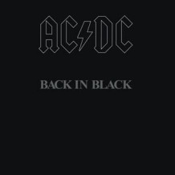
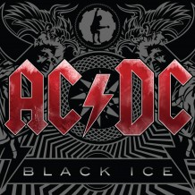
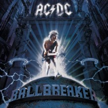

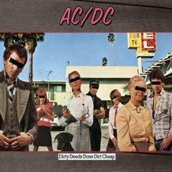
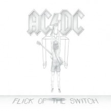
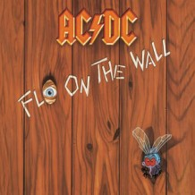
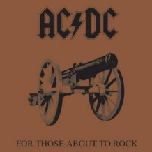
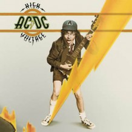

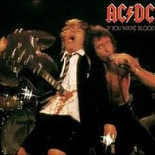
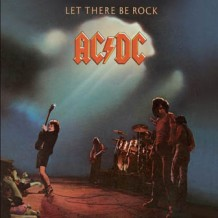
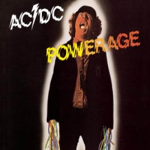
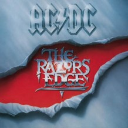
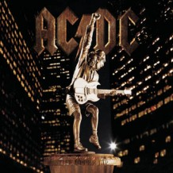
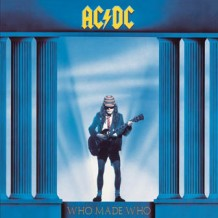
0
0
| Song | Album |
|---|---|
| Hells Bells | Back In Black |
| T.N.T | High Voltage |
| Have a Drink On Me | Back In Black |
| Rock and Roll Train | Black Ice |
| Money Talks | The Razors Edge |
| Rock & Roll Ain’t Power Up | Back In Black |
| Satellite Blues | Stiff Upper Lip |
| Shake a Leg | Back In Black |
| Shoot To Thrill | Back In Black |
| Whole Lotta Rosie | Let There Be Rock |
| Thunderstruck | The Razors Edge |
| Dirty Deeds Done Dirt Cheap | Dirty Deeds Done Dirt Cheap |
| Big Gun | Last Action Hero Soundtrack |
| What Do You Do For Money Honey | Back In Black |
| That’s the Way I Wanna Rock and Roll | Blow Up Your Video |
| Back In Black | Back In Black |
| Rock or Bust | Rock or Bust |
| Play Ball | Rock or Bust |
| Who Made Who | Who Made Who |
| Hell Ain’t a Bad Place to Be | Let There Be Rock |
| You Shook Me All Night Long | Back In Black |
| Highway To Hell | Highway To Hell |
| For Those About To Rock | For Those About To Rock |
| Let's Get It Up | For Those About To Rock |
| Put The Finger On You | For Those About To Rock |
| Riff Raff | Powerage |
| Are You Ready | The Razors Edge |
| Girls Got Rhythm | Highway to Hell |
| If You Want Blood, You Got It | Highway to Hell |
| Fire Your Guns | The Razors Edge |
| Jailbreak | '74 Jailbreak |
| Remaining songs... | Back in Black |